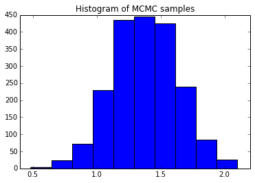

We review the Metropolis algorithm -- a simple Markov Chain Monte Carlo (MCMC) sampling method -- and its application to estimating posteriors in Bayesian statistics. A simple python example is provided.
Follow @efavdb
Follow us on twitter for new submission alerts!
Introduction
One of the central aims of statistics is to identify good methods for fitting models to data. One way to do this is through the use of Bayes' rule: If \(\textbf{x}\) is a vector of \(k\) samples from a distribution and \(\textbf{z}\) is a vector of model parameters, Bayes' rule gives
Here, the probability at left, \(p(\textbf{z} \vert \textbf{x})\) -- the "posterior" -- is a function that tells us how likely it is that the underlying true parameter values are \(\textbf{z}\), given the information provided by our observations \(\textbf{x}\). Notice that if we could solve for this function, we would be able to identify which parameter values are most likely -- those that are good candidates for a fit. We could also use the posterior's variance to quantify how uncertain we are about the true, underlying parameter values.
Bayes' rule gives us a method for evaluating the posterior -- now our goal: We need only evaluate the right side of (\ref{Bayes}). The quantities shown there are $\ $
\(p(\textbf{x} \vert \textbf{z})\) -- This is the probability of seeing \(\textbf{x}\) at fixed parameter values \(\textbf{z}\). Note that if the model is specified, we can often immediately write this part down. For example, if we have a Normal distribution model, specifying \(\textbf{z}\) means that we have specified the Normal's mean and variance. Given these, we can say how likely it is to observe any \(\textbf{x}\).
\(p(\textbf{z})\) -- the "prior". This is something we insert by hand before taking any data. We choose its form so that it covers the values we expect are reasonable for the parameters in question.
\(p(\textbf{x})\) -- the denominator. Notice that this doesn't depend on \(\textbf{z}\), and so represents a normalization constant for the posterior.
\($ It turns out that the last term above can sometimes be difficult to evaluate analytically, and so we must often resort to numerical methods for estimating the posterior. Monte Carlo sampling is one of the most common approaches taken for doing this. The idea behind Monte Carlo is to take many samples $\{\textbf{z}_i\}\) from the posterior (\ref{Bayes}). Once these are obtained, we can approximate population averages by averages over the samples. For example, the true posterior average \(\langle\textbf{z} \rangle \equiv \int \textbf{z} p(\textbf{z} \vert \textbf{x}) d \textbf{z}\) can be approximated by \(\overline{\textbf{z}} \equiv \frac{1}{N}\sum_i \textbf{z}_i\), the sample average. By the law of large numbers, the sample averages are guaranteed to approach the distribution averages as \(N \to \infty\). This means that Monte Carlo can always be used to obtain very accurate parameter estimates, provided we take \(N\) sufficiently large -- and that we can find a convenient way to sample from the posterior. In this post, we review one simple variant of Monte Carlo that allows for posterior sampling: the Metropolis algorithm.
Metropolis Algorithm
Iterative Procedure
Metropolis is an iterative, try-accept algorithm. We initialize the algorithm by selecting a parameter vector \(\textbf{z}\) at random. Following this, we repeatedly carry out the following two steps to obtain additional posterior samples:
- Identify a next candidate sample \(\textbf{z}_j\) via some random process. This candidate selection step can be informed by the current sample's position, \(\textbf{z}_i\). For example, one could require that the next candidate be selected from those parameter vectors a given step-size distance from the current sample, \(\textbf{z}_j \in \{\textbf{z}_k: \vert \textbf{z}_i - \textbf{z}_k \vert = \delta \}\). However, while the candidate selected can depend on the current sample, it must not depend on any prior history of the sampling process. Whatever the process chosen (there's some flexibility here), we write \(t_{i,j}\) for the rate of selecting \(\textbf{z}_j\) as the next candidate given the current sample is \(\textbf{z}_i\).
- Once a candidate is identified, we either accept or reject it via a second random process. If it is accepted, we mark it down as the next sample, then go back to step one, using the current sample to inform the next candidate selection. Otherwise, we mark the current sample down again, taking it as a repeat sample, and then use it to return to candidate search step, as above. Here, we write \(A_{i,j}\) for the rate of accepting \(\textbf{z}_j\), given that it was selected as the next candidate, starting from \(\textbf{z}_i\).
Selecting the trial and acceptance rates
{kind=link}
In order to ensure that our above process selects samples according to the distribution (\ref{Bayes}), we need to appropriately set the \(\{t_{i,j}\}\) and \(\{A_{i,j}\}\) values. To do that, note that at equilibrium one must see the same number of hops from \(\textbf{z}_i\) to \(\textbf{z}_j\) as hops from \(\textbf{z}_j\) from \(\textbf{z}_i\) (if this did not hold, one would see a net shifting of weight from one to the other over time, contradicting the assumption of equilibrium). If \(\rho_i\) is the fraction of samples the process takes from state \(i\), this condition can be written as
To select a process that returns the desired sampling weight, we solve for \(\rho_i\) over \(\rho_j\) in (\ref{inter}) and then equate this to the ratio required by (\ref{Bayes}). This gives
Now, the single constraint above is not sufficient to pin down all of our degrees of freedom. In the Metropolis case, we choose the following working balance: The trial rates between states are set equal, \(t_{i,j} = t_{j,i}\) (but remain unspecified -- left to the discretion of the coder on a case-by-case basis), and we set
This last equation says that we choose to always accept a candidate sample if it is more likely than the current one. However, if the candidate is less likely, we only accept a fraction of the time -- with rate equal to the relative probability ratio of the two states. For example, if the candidate is only \(80%\) as likely as the current sample, we accept it \(80%\) of the time. That's it for Metropolis -- a simple MCMC algorithm, guaranteed to satisfy (\ref{cond}), and to therefore equilibrate to (\ref{Bayes})! An example follows.
Coding example
The following python snippet illustrates the Metropolis algorithm in action. Here, we take 15 samples from a Normal distribution of variance one and true mean also equal to one. We pretend not to know the mean (but assume we do know the variance), assume a uniform prior for the mean, and then run the algorithm to obtain two hundred thousand samples from the mean's posterior.  The histogram at right summarizes the results, obtained by dropping the first 1% of the samples (to protect against bias towards the initialization value). Averaging over the samples returns a mean estimate of \(\mu \approx 1.4 \pm 0.5\) (95% confidence interval), consistent with the true value of \(1\).
{kind=link}
%matplotlib inline
import matplotlib.pyplot as plt
import numpy as np
# Take some samples
true_mean = 1
X = np.random.normal(loc=true_mean, size=15)
total_samples = 200000
# Function used to decide move acceptance
def posterior_numerator(mu):
prod = 1
for x in X:
prod *= np.exp(-(x - mu) ** 2 / 2)
return prod
# Initialize MCMC, then iterate
z1 = 0
posterior_samples = [z1]
while len(posterior_samples) < total_samples:
z_current = posterior_samples[-1]
z_candidate = z_current + np.random.rand() - 0.5
rel_prob = posterior_numerator(
z_candidate) / posterior_numerator(z_current)
if rel_prob > 1:
posterior_samples.append(z_candidate)
else:
trial_toss = np.random.rand()
if trial_toss < rel_prob:
posterior_samples.append(z_candidate)
else:
posterior_samples.append(z_current)
# Drop some initial samples and thin
thinned_samples = posterior_samples[2000:]
plt.hist(thinned_samples)
plt.title("Histogram of MCMC samples")
plt.show()
Summary
To summarize, we have reviewed the application of MCMC to Bayesian statistics. MCMC is a general tool for obtaining samples from a probability distribution. It can be applied whenever one can conveniently specify the relative probability of two states -- and so is particularly apt for situations where only the normalization constant of a distribution is difficult to evaluate, precisely the problem with the posterior (\ref{Bayes}). The method entails carrying out an iterative try-accept algorithm, where the rates of trial and acceptance can be adjusted, but must be balanced so that the equilibrium distribution that results approaches the desired form. The key equation enabling us to strike this balance is (\ref{inter}) -- the zero flux condition (aka the detailed balance condition to physicists) that holds between states at equilibrium.